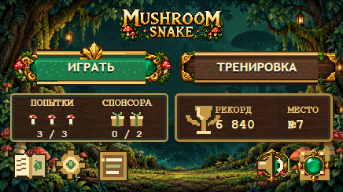
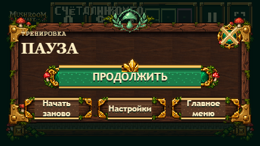
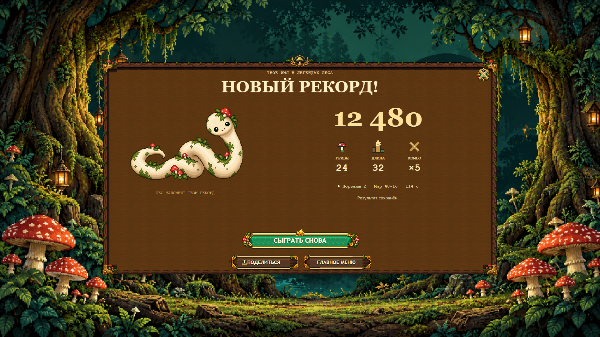
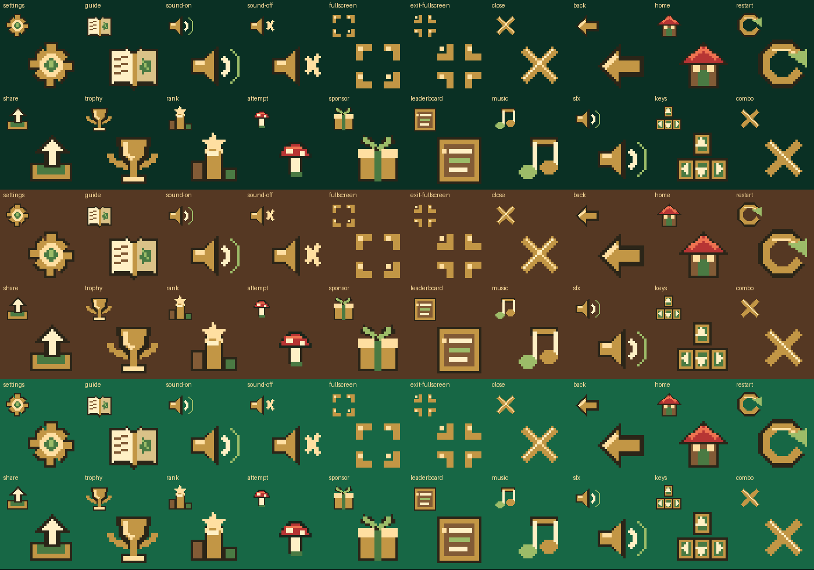
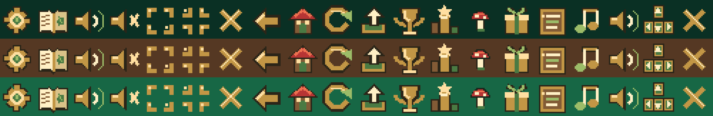

Начало:14eeb95 / TEST eaf73478e2df. Только UI/art/responsive presentation. Production и DB не изменяются.
До — реальные starting LIVE captures. Кандидат — те же TEST-контейнеры с точной локальной подменой release. LIVE — итоговые снимки после canonical TEST публикации (раздел появится после проверки). Native PNG открывается отдельно кликом. Локальные Result/Record fixtures отмечены отдельно; естественный Training Result — в основном разделе.



Forest / wood / emerald,1×/2×/4×. Дополнительно64px Guide, Settings, Trophy, Leaderboard.

